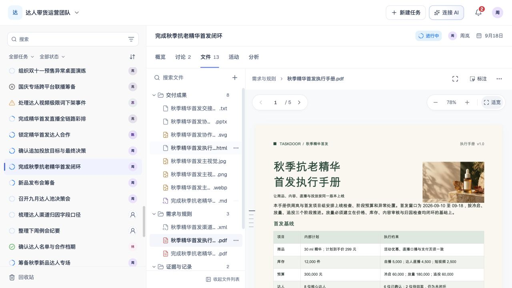

8支持格式类别
16允许上传的扩展名
5可编辑的文本／源码类别
已实施 · 范围内验证完成。 54项定向检查通过，应用类型、结构门与前端打包通过；本轮未逐一重传全部16扩展名。当前清单按 PRD-0232，历史17种素材统计单独归档。
文件列表入口已精简。 同一图标始终在预览工具栏，无常驻文字或底部整行入口；仅toolbar吸附，树自然移动。本轮视觉不新增语义ID，支持表及标注能力保持。本轮3项与桌面验证不与旧54项混称，PDF页码／正文滚动未作保持承诺。


支持格式与操作
选择文件与拖入文件采用同一白名单；混合批次含不支持文件时整批不添加。编辑仍须具备权限；未保存草稿不替代已保存版本下载。
| 支持格式 | 预览样式与限制 | 具体标注操作 | 编辑许可 | 下载内容 |
|---|---|---|---|---|
PDF.pdf | 浅色原版式阅读器；分页、页码、缩放、适宽，页缩略图默认收起新上传按实际PDF原件读取；扫描页不提供OCR。旧历史文字摘要只读，不计原版式预览。 | 选择同页实际文字 → 填写意见 → 添加；可跨行，不跨页，无文字页只阅读 | 只读不允许编辑PDF正文或恢复预置文字快照 | 当前查看版本的原始PDF；标注不写回原件 |
PPT / PPTX.ppt .pptx | 本地转换后的真实静态幻灯片；逐页阅读，缩略图默认收起不提供动画、放映或原件回写；版式及字体取决于转换结果 | 仅转换页有可选文字时，选择同页文字并填写意见；无文字页只阅读 | 只读不允许幻灯片编辑 | 当前查看版本的原始PPT／PPTX；不以预览PDF替代 |
PNG / JPG / JPEG / GIF / WebP / SVG.png .jpg .jpeg .gif .webp .svg | 图片画面预览，保留完整内容矩形区域标注，不提供GIF／WebP动画时间或帧定位 | 开启标注 → 拖出矩形区域 → 填写意见；保留区域及局部截图 | 只读不允许图片内容编辑 | 当前查看版本的原始图片；不把标记合成到原件 |
MD.md | Markdown文档阅读不包括MDX；不执行组件或脚本 | 选择正文文字 → 填写意见 → 添加；按准确选区定位 | 可编辑允许正文编辑并保存为新版本 | 当前查看版本的Markdown文本 |
TXT / LOG.txt .log | 纯文本阅读，保留原文布局按文本读取，不执行日志中的命令或内容 | 选择文字 → 填写意见 → 添加；按准确选区定位 | 可编辑允许文本编辑并保存为新版本 | 当前查看版本文本，保留TXT／LOG原扩展名 |
HTML / HTM.html .htm | 隔离的静态页面预览不执行脚本、表单提交或文件内导航；不提供可视化网页编辑 | 指向并选择页面元素／区域 → 填写意见；不提供字符选区标注 | 可编辑仅允许HTML源码编辑并保存版本 | 当前查看版本HTML源码，保留HTML／HTM扩展名 |
JSON.json | 等宽源码与行号，保留空白、缩进、空行及换行语法不完整仍看原文；未承诺语法校验、结构折叠或自动格式化 | 选择源码文字 → 填写意见 → 添加；按准确文字选区定位 | 可编辑允许整段源码编辑并保存新版本 | 当前查看版本JSON源码，UTF-8文本 |
XML.xml | 等宽源码与行号，保留空白、缩进、空行及换行语法不完整仍看原文；不执行内容、不解析或读取外部实体 | 选择源码文字 → 填写意见 → 添加；按准确文字选区定位 | 可编辑允许整段源码编辑并保存新版本 | 当前查看版本XML源码，UTF-8文本 |
没有匹配的支持格式
一套临时意见流程，四类定位
选择内容 → 填写意见 → 添加到本次跨文件列表 → 核对后带入任务讨论草稿附件，或交给本地 AI。文件内不新增沟通区。
| 内容 | 操作 | 保留的位置 |
|---|---|---|
| PDF／有文字的PPT转换页 | 同页选字并填写意见 | 固定版本＋页码＋页内文字范围；局部截图辅助核对 |
| MD／TXT／LOG／JSON／XML | 选字并填写意见 | 固定版本＋原文＋准确文字范围；重复文字按实际位置区分 |
| 图片 | 矩形框选并填写意见 | 固定版本＋规范化矩形＋局部截图 |
| HTML／HTM | 选择元素或区域并填写意见 | 固定版本＋元素／区域位置＋局部截图，不是字符选区 |
- 选择与拖入使用同一白名单；同批含不支持文件时整批不添加，指出对应文件，已有列表保持。
- 仅MD、TXT／LOG、HTML源码、JSON／XML允许编辑，还须满足权限与版本规则。
- 文本下载当前查看的已保存版本；未保存草稿不替代版本下载；下载不产生新版本。
- PDF／PPT／图片下载对应版本原件，临时标注不回写原件。
- 标注是当前页面跨文件的临时修改意见，任务讨论是唯一沟通区；发送到讨论先加入草稿附件，明确发送才发布。
暂不支持新上传
这些格式不创建成功上传记录，也不使用文件名、静态占位图或预置正文冒充真实预览。
- DOC / DOCX没有任意上传原件的真实文档预览；预置正文不算支持
- XLS / XLSX / CSV / TSV没有当前范围内的真实工作簿／表格上传预览
- ICS没有日历事件预览
- 音频 / 视频没有当前播放器与时间定位标注能力
- ZIP / RAR / 7Z 等压缩包没有只读包目录预览
- MDX、其他源码及专业格式不在支持清单；不会因text/*或image/*泛分类而自动接收
已有材料保留。 仅退役未改动、无编辑记录或草稿且与原模板完全一致的内置不支持样例。用户上传、自建、改名／移动、正文或版本变化、草稿与历史关联均保留，不物理删除原始文件数据。5173主任务实测 21 → 13，8个未改动内置不支持样例已移出。旧历史PDF摘要仍只读，不计原版式预览。
验证与历史
上一轮功能证据（旧文件列表入口布局）



本轮独立验收：54项定向通过（能力／源码25、模板／原件16、团队相关7、UI6）；应用TypeScript、结构门及Vite前端打包均通过，保留既有配置／分包提示。当前上传单次最多10个文件、单文件20MiB。
5173真实操作确认文件13项，PDF原件5页、无编辑且标注／全屏可用；JSON源码与编辑入口保留。JSON＋DOCX混合批次整批拒绝，两份均未新增。图片是实际反馈，完整操作结果另见验收记录。
未逐一重传全部16扩展名。PPT／PPTX依赖本地LibreOffice转换，转换文字层决定选字；旧PDF历史文字摘要只读，不计原版式预览。本轮没有重构旧历史读取路径。
团队夹具既有诊断冲突断言失败保留；前轮项目级build被既有server测试类型错误阻断，不声明完整构建或全量测试通过。开发服务曾重载／空白，换新验收tab后完成页面检查，不宣称全程无错。未全量测试、双重审查、远程操作或物理删除。
上轮 JSON／XML 真实上传、选字标注、编辑保存与字节级下载验证只保留原场景，不代替本轮完整清单验收。
原17种素材统计及审计已转为历史：旧报告 · 旧清单 · 原始素材统计 · 旧界面抽查。历史候选方案不代表本轮新增支持。